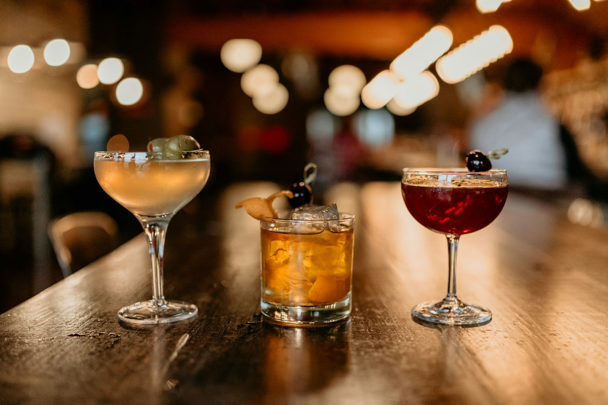
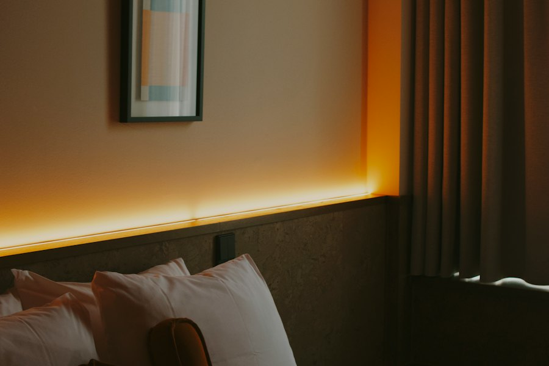
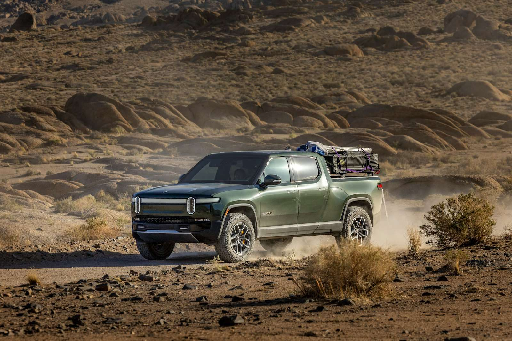
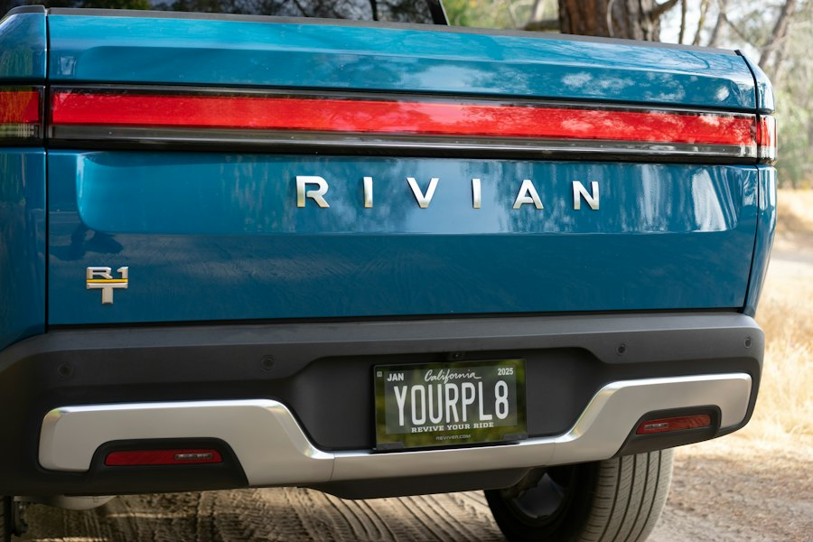
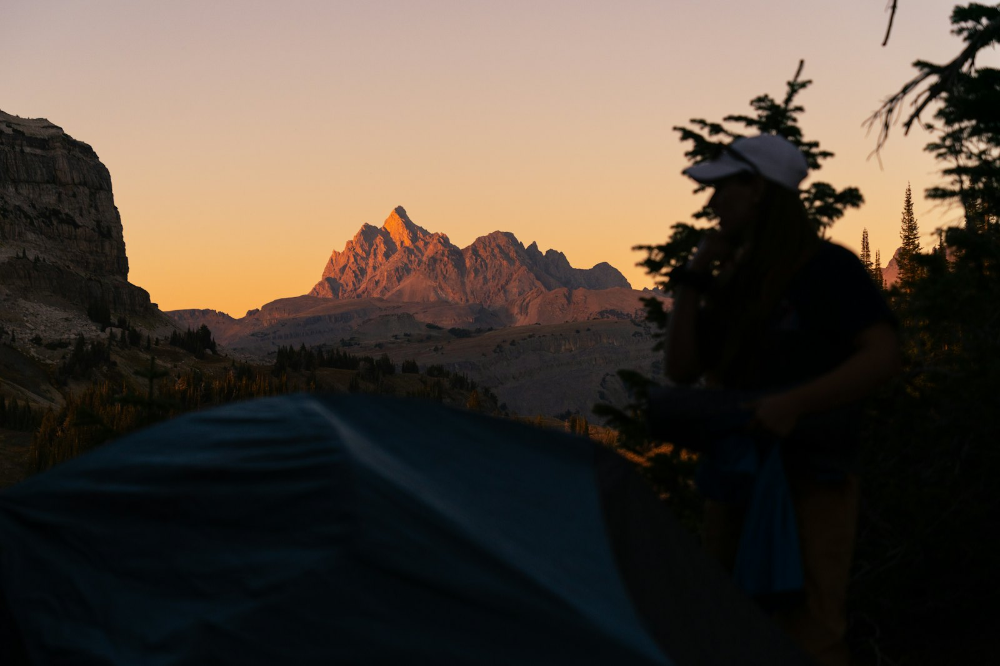
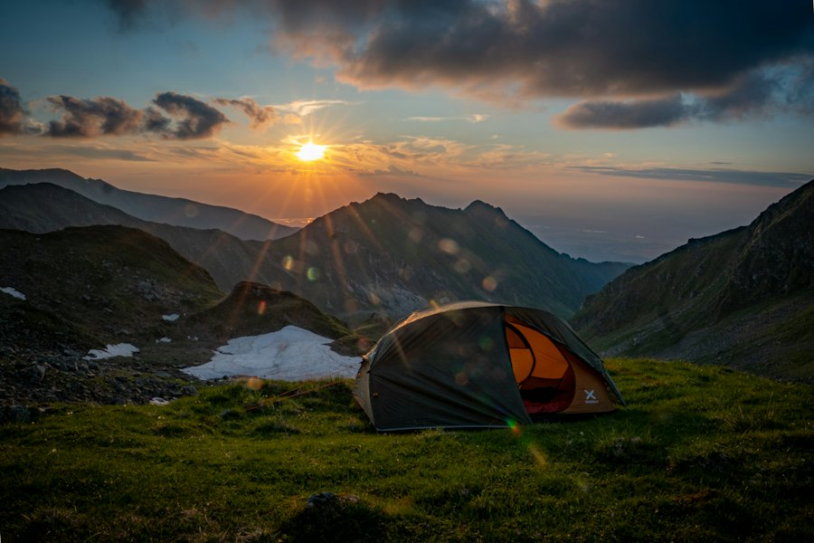

What I shoot
Hotels, vehicles and the outdoors, photographed on location.
I’m Zak Winnick. I photograph independent hotels, restaurants and tasting rooms, cars and EVs out on real roads, and people outside doing what they came for. I come to you.
-

Hospitality and places.
Hotels, inns, restaurants, tasting rooms and the properties people book.
The room as a guest first sees it, the front desk, the plate, the morning light, photographed for your site, your listings and your next season.

-

Vehicles and EVs.
Cars, trucks and EVs out where they get used: on real roads, at the charger, loaded up at the trailhead.
The hero shot, the details and the product installed and working.

-

Outdoor and adventure.
People outside using the gear, guiding the trip or running the event.
Real light, real weather and the moment that makes it worth going.

When a moment needs to move, I shoot short films too.